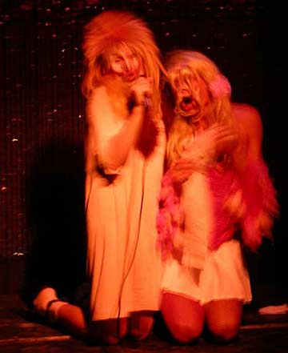
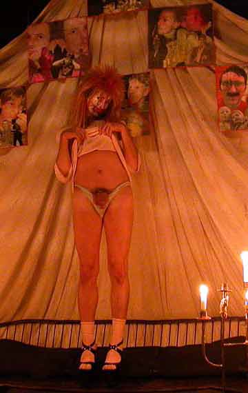
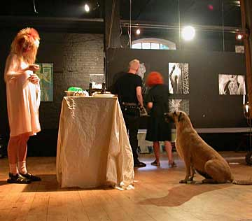
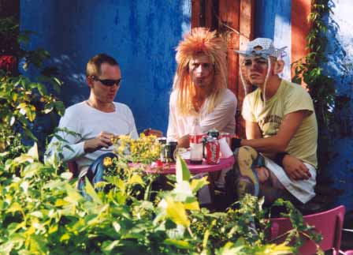

Dennis Agerblad at the Kunst i Dunst.
23/07 - 2003.
Artwork
Pictures
Film

Dennis Agerblad live with Stimulundia.

Dennis Agerblad showing his dick and his art at the opening
of Kunst i Dunst.

Dennis Agerblad in the exhibition.

Miss Fish, Dennis Agerblad & The Thom in the garden.